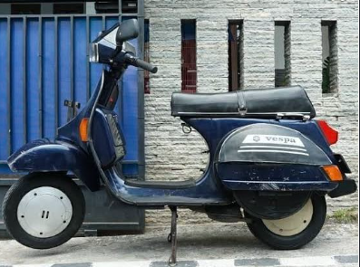

SCOOTER GARAGE - CLASSIC 2-TAK
Vespa Classic (2-Tak): Pesona Mesin Kanan & Sejarah Otentik

Vespa Classic 2-Tak adalah mahakarya legendaris asal Italia yang telah mengaspal selama puluhan tahun. Ciri khas mesin kanan yang berkarakter, transmisi manual di stang kiri, serta aroma khas oli samping dan suara knalpot yang garing menjadikan Vespa 2-tak bukan sekadar alat transportasi, melainkan bagian dari sejarah dan jiwa budaya jalanan.
Merawat Vespa 2-Tak mengajarkan kesabaran dan keakraban dengan mesin. Dari sinilah lahir rasa solidaritas tinggi antar sesama pengendara "mesin kanan" di jalanan—yang selalu siap saling membantu jika terjadi kendala.
Katalog Tipe Vespa Classic (2-Tak)
Klik salah satu tipe di bawah ini untuk melihat rincian spesifikasi teknis dan gaya modifikasinya.